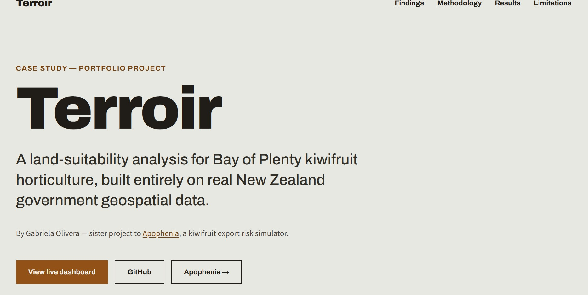

Terroir · Geospatial land-suitability analysis
Where should kiwifruit actually grow in the Bay of Plenty?
22,834Parcels analysed
16,072Scored
4Live sources
Four live New Zealand government datasets combined to score how well each rural parcel suits kiwifruit.
